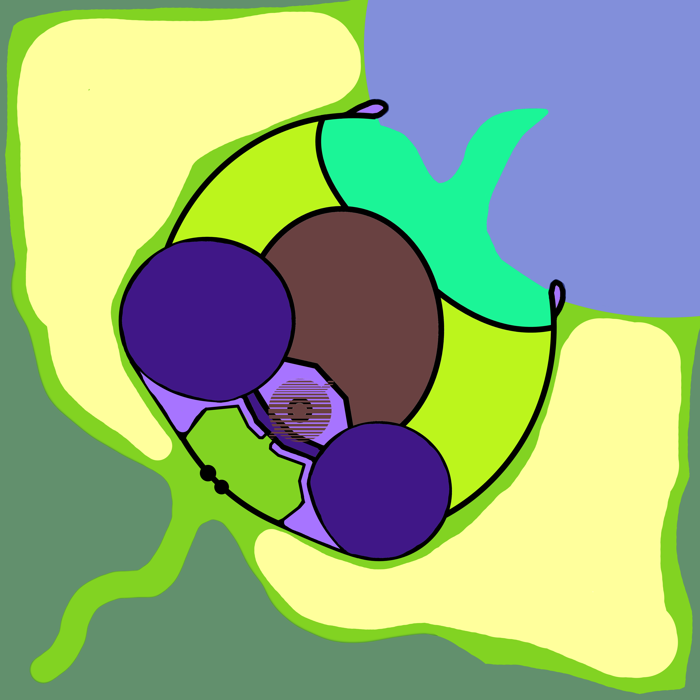
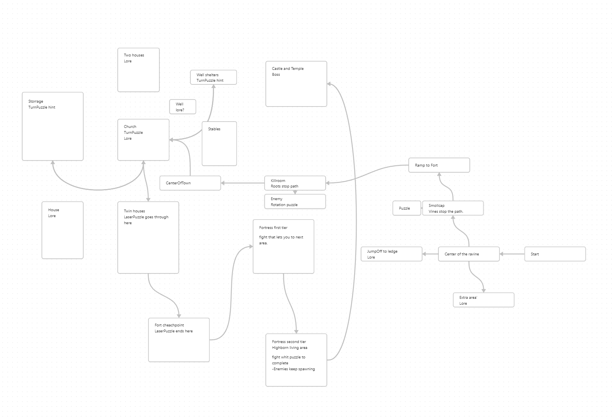
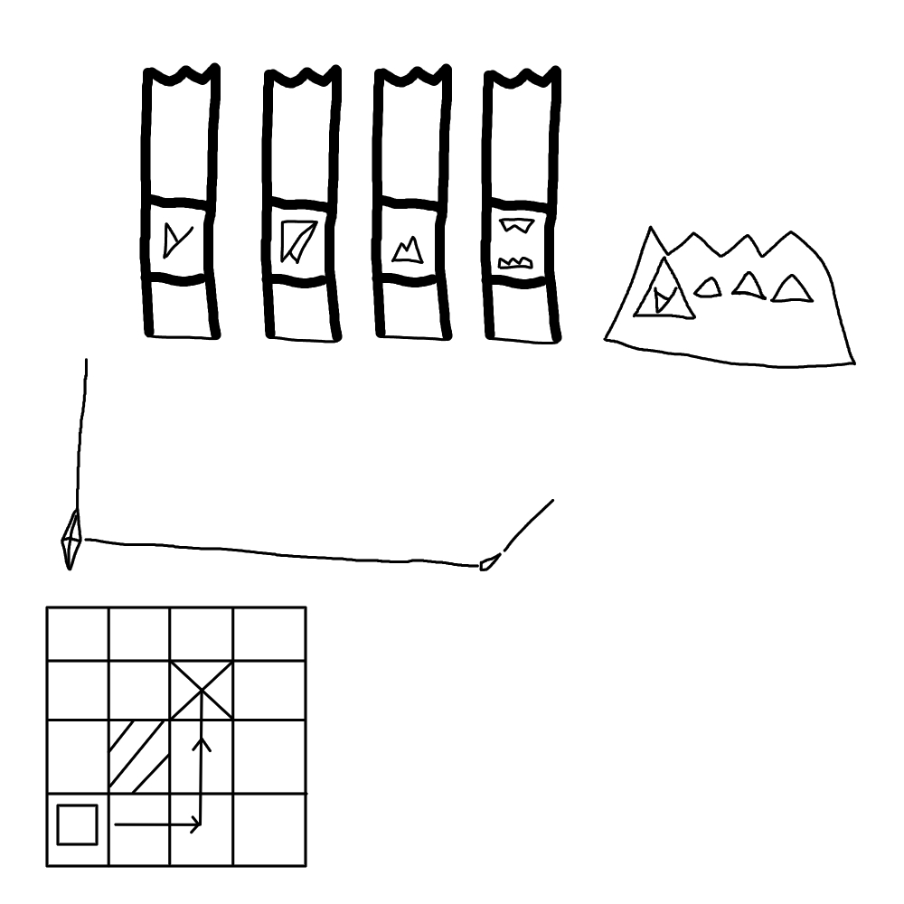

Lumen: world of color
Lumen is a third person action adventure game released on steam. That was made in about 3 months.
I worked as level designer in this game and was given rather difficult task of making a open world esk level that at the end was not done. I also worked on the steam page tecnical side like uploading and plasing information and text.
Beginning
Starting at the beginning of the creative proses of the map creatin. At this point I was working on making a open world map and our characters movement speed was if i remember right faster than it is at this point. And here we come to the first problem of my work and show of my in experience. I did not demand to have or have meeting to make a sheet where our characters movement speed and actions where defined. Whit out such sheet or knowledge I could not make exact or complex map since i would not know how to make jumping puzzles, how long it takes to move from place a to b or how small holes can the player character go through.
But lets begin. At first i started whit general plan of the region the game takes place in.
I was requested to make a large, vertical, open and inter connected. whit the little experience from this project. i now know what sort of massive task this was. But back when this was happening i had no view to what was requested of me. It was a school project so i started to do best i could.
I start my creative proses whit Krita a image editor and i make general shapes of the region. whit separate colors for separate regions.
Map desing

The map was separated into six major region. Tutorial is forest road that leads to the fortres. Town center is at the center of them map and would connect to all other region. Forest would be top left of the map. Burnt region was to bottom right. Harbor was at citys water front. And then there was the fortres this is the two large blue circles and bridge in betwene them.
At start i was of the oppinion that the tutorial area should have basic variant of all the different puzzle types in the game to teach the player both the puzzles and gameplay of the game.
More presize planning was made whit Obsidian making plans and connections betwene level sections and Krita continuing as visual planning tool.

This was used as flow chart for the level. Mapping them key points in them map that the player would need to complete to proseede forwards. Few of this nodes where kill something but mainly it contained puzzles to complete.
At later point when we got the game be tested by third party people the tutorial was found to be to complicated. So becan redesing of it. Ramp leading up from the starting ravine was shifted so that the path up was now fasing the player making the player see the way to the fortress and shortening the tutorial are little. this also let our implementor add a new easter egg section to the right of the ravine.
Puzzles desing

At the beginning i also worked on puzzle designs. We had some basic puzzle ideas i was making more concrete. Our ideas where to have a skyrim type rotation, laser, block pushing and archery puzzles. Archery puzzle was not designed since archery its self was not present and was as idea prety simple. You shoot a target and it does a thing.
Implementing
Map implementation
Since i am person who gets motivated by seing my thing come to existance. I started working towards the map by sculpting terrain in Unreal editor to look like my plans. When that was done to suffisient accuracy at the time i started working on the fortres its self in blender. At this point map implementation was made difficult by us not having assets to place in there.
The implementation was not helped by the fact that apparently you can make Unreal terrain in multiple ways. I did it in the wrong way and needed to start over. So i did re made the terrain form whit few chanses but general shape staing the same. How the new terrain was it would let us have parts of the map not loaded and have automatically made lods of that area of the map, that didn't end up working whit our project due to the cure effect material leaving the lods always pink.
Early on we got a tree asset thta i used liberally to make the enviroment. asly this asset did not have a lod for it so we could not have overly many of them so i was suposed to reduce them what i was going to do later but someone else did it before i did it.
After some time we had little communication mishab that led me to make the tutorial area into the ravine it is today. this desission was supported by the fact that our old tutorial area was far to large. this was due to player character speed getting chansed whit out me getting informed and me not knowing how to start the game in right game mode, thus i could not test the map whit our player character and my in experience whit designing and making maps.
Player character
I had very little to do whit the player character. But that little ended up being prety important. I made the player characters UV-map after the player character was under production for 2 weeks. We ended up using a free asset that we modified.
Experience of this project
This was nice experience that let me learn about my self, Unreal engine and teamwork.
our teams communication was prety laking and people made desissions whit out informing people who this information would effect. Though in our case this seems to have ended up working nicely.